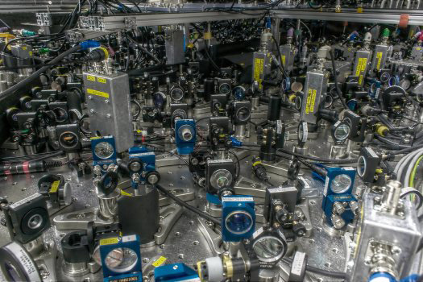

Resultados(){
Entrevista
Por: Fellipe Augusto Alves Gurgel

Michele: Os avanços na compreensão das bases de informação quântica talvez sejam muito técnicos e não são fáceis de explicar; por exemplo, uma famosa "hipótese de aditividade" foi refutada, mostrando que dois canais de comunicação quântica juntos podem, em algum sentido, comunicar mais do que a soma do que cada um pode se comunicar; ficou provado que os sistemas de demostração interativa quânticos têm o mesmo poder de sistemas de demonstração interativos clássicos (é difícil de explicar o significado disso - ele oferece muita orientação na compreensão do poder dos computadores quânticos).
As aplicações incluem avanços na simulação de sistemas de mecânica quântica. Por exemplo, como os físicos quânticos desenvolvem teorias para explicar os fenômenos físicos, com um computador clássico normalmente não é viável calcular de forma bruta as previsões da teoria física (e, assim, testar a teoria). Um computador quântico poderia, por exemplo, testar teorias sobre as propriedades dos materiais ou teorias quânticas da gravidade, etc, de forma que não achamos que computadores clássicos podem.
Um computador quântico pequeno poderia servir como um transmissor em uma rede global de comunicação quântica ou como parte de uma rede terrestre ou em um satélite de comunicação com estações na terra e em outros satélites.
Outras aplicações incluem acelerar uma ampla gama de problemas de otimização, tais como agendar ou otimizar o layout de uma rede, etc.
Detecção Quântica e metrologia poderiam permitir medições aprimoradas, melhorando a imagem médica ou de detecção, melhorando a exploração de recursos (por exemplo, a exploração de petróleo), etc.
Temos um crescente número de implementações impressionantes de ferramentas e dispositivos quânticos. Por exemplo, agora têm se ferramentas para medir as propriedades dos elétrons individuais, o que antes não era possível. As pessoas têm controlado até 14 íons em uma armadilha. Implementaram várias rodadas de correção de erro quântico. Têm se controlado até 12 rotações nucleares usando ressonância magnética. Podemos controlar vários "qubits supercondutores" em um chip e interagir uns com os outros; esses são sistemas sintéticos quânticos com grandes chances de expansão para sistemas maiores. Muitos outros sistemas quânticos também estão sendo desenvolvidos, onde os qubits podem ser controlados e interagirem com outros.

Teletransportador Quântico
Podemos preparar e medir partículas individuais de luz, e pares emaranhados de tais partículas, com maior confiabilidade e precisão. Conseguiram comunicar partículas quânticas até cerca de 200 km. Vários programas ao redor do mundo estão buscando implementar canais de comunicação quântica entre as estações terrestres e satélites. Há tantos outros exemplos de incríveis marcos experimentais nos últimos 12 meses, e a intensidade parece estar aumentando. É um momento muito emocionante!
| Resposta Original: |
-the deep advances in understanding the foundations of quantum information are perhaps very technical and not so easy to explain (e.g. a famous “additivity conjecture” was disproved, showing that two quantum communication channels together can in some sense communicate more than the sum of what each can communicate; it was proved that quantum interactive proof systems have the same power as classical interactive proof systems (it’s hard to explain the significance of this – it provides deep guidance in understanding the power of quantum computers).
The applications include advances in simulating quantum mechanical systems. For example, as physicists develop quantum theories to explain physical phenomena, with a classical computer it is typically not feasible to brute-force calculates the predictions of the physical theory (and thereby test the theory). |
Michele: Enquanto as leis da física nos dizem que a construção de computadores quânticos é possível, elas não nos dizem como. Quando o poder de um computador quântico foi descoberto, tínhamos apenas algumas ferramentas quânticas capazes de manipular informações de um modo quântico. Imagine tentar construir os computadores de hoje com as ferramentas disponíveis de 100 anos atrás!
Estamos construindo um conjunto de ferramentas quânticas, e melhorando continuamente a precisão destas ferramentas. Precisamos ter precisão suficiente para atingir os limites de qualidade que permitam as nossas teorias de correção de erros tolerante a falhas quânticas para suprimir os erros e imprecisões, e permitir cálculos significativos. Isso é muito difícil, mas nós continuamos a chegar mais e mais perto.
| Resposta Original: |
While the laws of physics tell us that building quantum computers should be possible, they don’t tell us how to do it. When the power of a quantum computer was discovered, we only had a few quantum tools capable of manipulating information in a quantum way. Imagine trying to build today’s computers with the tools available 100 years ago! |
}